De trolska Agnsjöarna
Mitt favoritområde i Florarna har sedan första början varit och är skogen, mossarna och myrarna kring Lilla och Stora Agnsjön. Här finns eller har i vart fall funnits ända till 2012 funnits en genuin vildmarksstämning…där jag känner hur trollen betraktar mig när jag befinner mig där.
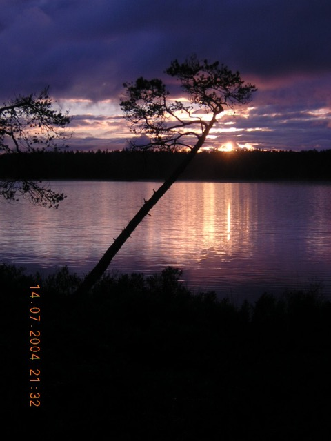
Solen går ner över skogen nordväst om Stora Agnsjön. Foto: Ronny Fredriksson
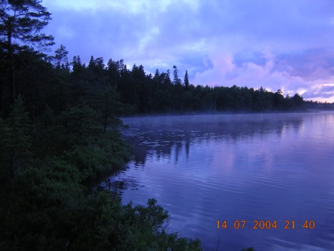
Dimslöjor över Stora Agnsjön nedanför Agnsjöberget. Foto: Ronny Fredriksson
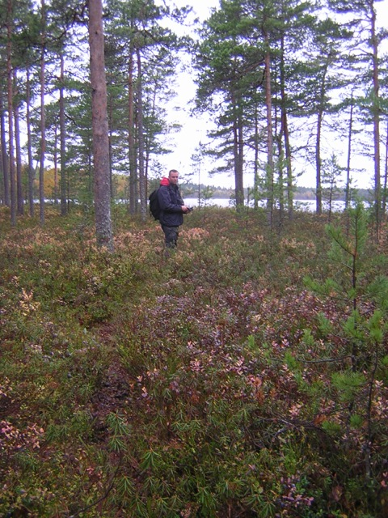
Jag i mossen öster om Stora Agnsjön den 11 oktober 2003. Foto: Alexander Holst
Jag tror att många som besökt Agnsjöarna kan hålla med mig…även om man inte behöver tro på troll. Men det finns en närvaro i detta område som gör att jag brukar känna mig iakttagen. Vi får hoppas att de nya skogskörvägarna som drogs närmare Agnsjöarna under hösten 2012 inte skrämmer bort dessa skogens väsen...
Trollen här är dock verkliga….Agnsjöarna har alltid varit en god lokal för ugglor….i princip varje år hörs sparvugglans visslande i skymning och gryning i skogen intill Agnsjöstugan. En fin gammal övernattningsstuga som ligger vid Lilla Agnsjöns västra strand. Slagugglan brukar kunna höras på norra sidan av sjöarna….och pärlugglan har när det varit som bäst…hörts i tre olika väderstreck samtidigt. Under några år på 1980-talet bodde en nästintill spelgalen pärluggla i den stora tallen som ligger precis vid Agnsjöstugan. Den höll på både natt och dag.
Pärlugglan har under ett antal år varit allt sällsyntare i de Norduppländska markerna. givetvis mycket beroende på det moderna skogsbruket, men också kanske pga tillgång på föda i form av gnagare….samt att den kanske blivit allmänt sällsyntare…men runt Agnsjöarna har den ändå kunnat höras.
Av hackspettar finns givetvis större hackspett talrikt, men även spillkråka och tretåig hackspett finns regelbundet i området kring Agnsjöarna.
I Stora Agnsjön har storlommen häckat fram till åtminstone 1980-talet. Jag har själv sett storlom i sjön vid ett par-tre tillfällen men aldrig kunnat konstatera någon häckning. Sannolikt häckar den inte i sjön längre.
I Agnsjöarnas omgivningar har både pilgrimsfalk som bodde i ett gammalt gjusbo på södra sidan om Stora Agnsjön (fram till slutet av 1960-talet) och fiskgjuse häckat på södra kanten av Dikesmyren (fram till cirka 1990 då botallen föll).
Två tjäderspel skall finnas/funnits i Agnsjöarnas omgivningar det ena tyvärr liggande i yttre zonen och det andra utanför reservatsgränsen. Vilket gör att båda spelen är utsatta för det intensiva skogsbruket.
Trana brukar till och från häcka på Dikesmyren.
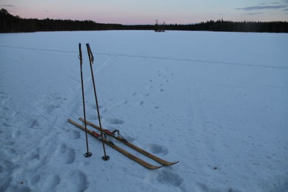
Vinterskymning vid Stora Agnsjön den 9 mars 2013. Foto: Ronny Fredriksson
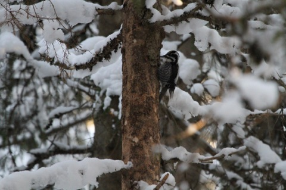
Den tretåiga hackspetten brukar jag med stor tur emellanåt se i Agnsjöstugans närhet. Kan berätta att det också var platsen för min första observation av nämnd hackspett. Foto: Ronny Fredriksson
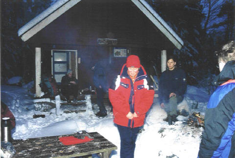
Fullt hus en vinterkväll vid Agnsjöstugan. Foto: Ronny Fredriksson
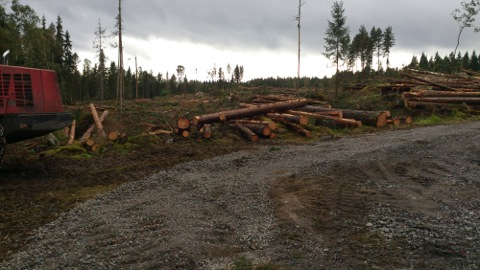
Hösten 2012 började skogsbolaget tyvärr ta upp stora hyggen i skogen strax utanför reservatets södra gräns vid Agnsjöarna. Inte nog med detta….de påbörjade en vägdragning ända fram till mossen som är söder om Lilla Agnsjön. Foto: Ronny Fredriksson
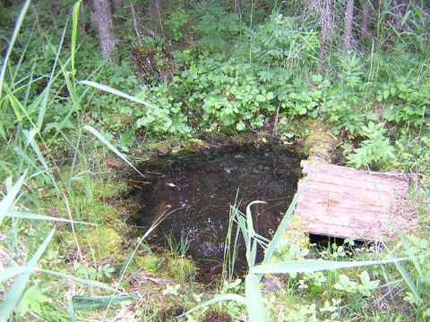
Källan vid Agnsjöstugan. Foto: Ronny Fredriksson
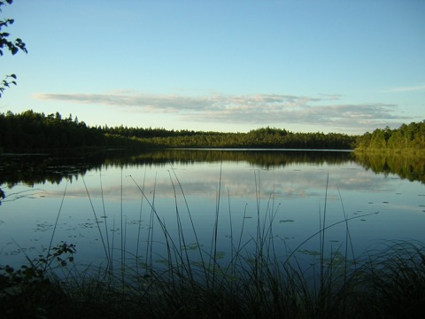
Skymning vid Lilla Agnsjön från södra änden. Den 6 september 2003. Foto: Ronny Fredriksson
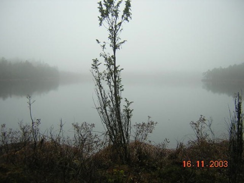
Höstdimma vid Lilla Agnsjön från södra änden. Foto: Ronny Fredriksson
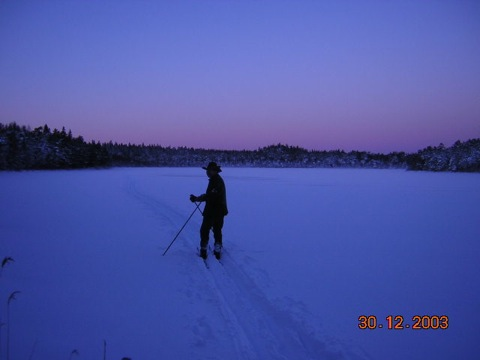
Vinterskymning vid Lilla Agnsjön från södra änden. Hasse på skidor. Underbart vackert. Foto: Ronny Fredriksson
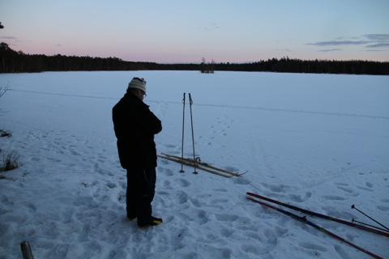
Peter surfar på mobilen i väntan på ugglornas rop vid Stora Agnsjön. En stund senare hördes två pärlugglor. Den 9 mars 2013. Foto: Ronny Fredriksson
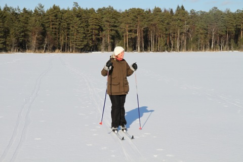
Mamma, Britt-Marie, på Stora Agnsjöns is den 16 mars 2013. Foto: Ronny Fredriksson

Första gången jag såg ett bo av fiskgjuse var vid södra kanten av Dikesmyren vid Agnsjöarna. Här bodde gjusarna ända tills den gamla grova botallen föll en vinter. Foto: Ronny Fredriksson
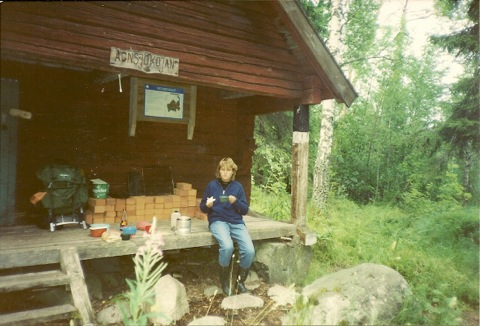
Min syster Pernilla vid Agnsjöstugan, Sannolikt slutet av 1980-talet. Foto: Ronny Fredriksson
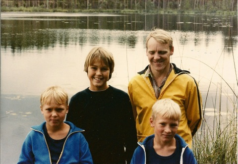
Kusin Niklas, syster Pernilla, Tage och kusin Jonas vid Lilla Agnsjön. Sannolikt början av 1980-talet. Foto: Ronny Fredriksson
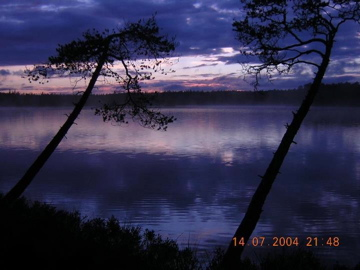
Stora Agnsjön en sommarnatt. Foto: Ronny Fredriksson
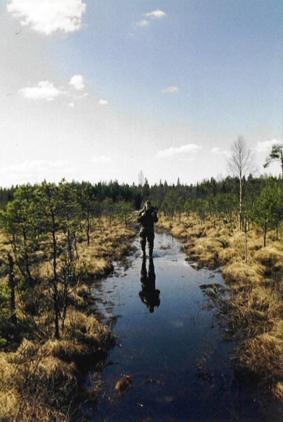
Jag själv på väg över Dikesmyren en vår.
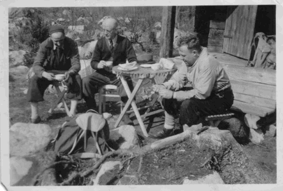
Bild från Agnsjöstugan tidigt 40-tal. Enligt uppgift är det från vänster John Eriksson (skogvaktare), Johan August Lundmark (skogvaktare) och Henning Hansson från Örbyhus. Fotot upplåtet av Per-Arne Hansson (son till Henning Hansson).
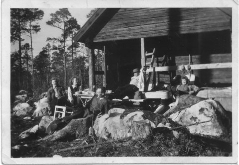
På denna bild Henning Hansson på verandan lutad mot stolpen. Övriga ? Bilden upplåten av Per-Arne Hansson
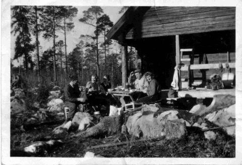
Henning Hansson i ljus anorak. Någon som känner igen de övriga ? Fotot upplåtet av Per-Arne Hansson
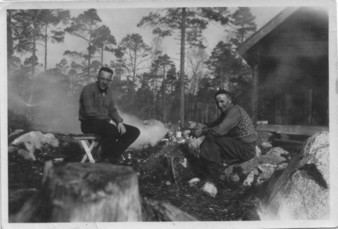
Henning Hansson till vänster sittande på bänk, vem är den andre sittande på stenen ?. Fotot upplåtet av Per- Arne Hansson
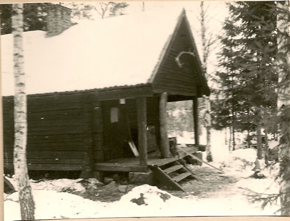
Agnsjöstugan på 1960-talet. Foto: Holger Hagel
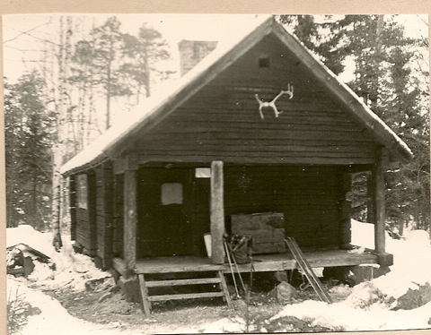
Agnsjöstugan på 1960-talet. Foto: Holger Hagel
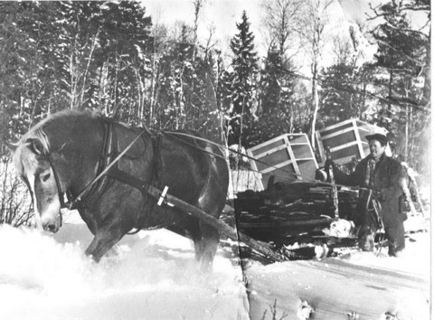
Sigge och hästen Bläsen på väg över frusna myrar till Agnsjöstugan på början av 1940-talet med bla skåp till det blivande köket i Agnsjöstugan. Delar av dessa skåp revs ut i samband med Domänverkets upprustning av stugan på 1980-talet, men några skåp finns kvar än idag. Bilden ägs av Sigge Westerberg. Inskannad 2006 av Ronny Fredriksson.
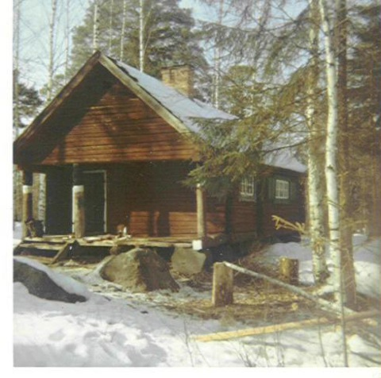
Agnsjöstugan, sannolikt 1970-tal. Notera att det ännu är tre pelare på verandan. Foto: Arne Nilsson
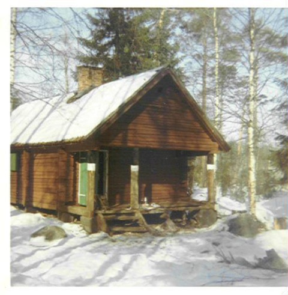
Agnsjöstugan. Foto: Arne Nilsson